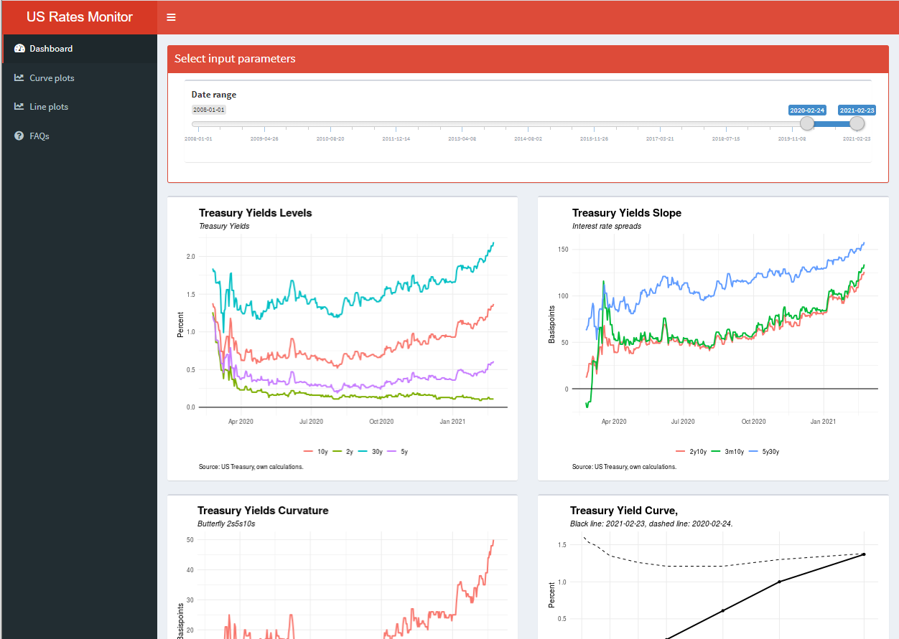

The Shiny app created in this formula aims to be a easy to use monitor to be on top of US Bond market focusing on US Treasury Yields. The app will give a summary for some of the most important curves and indices on the US Treasury market as well as Breakeven Inflation expectations.
Shiny app can be found here.
Code available on github.

Methodology
Rates are parsed from US Treasury on a daily basis. However, the app will only parse the latest data once every day (of those days the app is used). The data will then be saved as an CSV-file to Amazon S3 which will work as an cashe and persistent storage for the app. Next time the app is used on the same day, it will get its data from the CSV-file. The purpose of this is to limit number of time the app is parsing data, and to keep the speed up. The app will be 7-10 seconds slower the first time it is used each day compared to the following times.
Another great purpose with this approach is to be able to get cleaned data for different purposes using the CSV-file from Amazon S3.
More detailed info about the rates, indices and curves can be found on the app.
Technologies
For this project, R is the used. Please see a short description for each script below followed by some example code.
parseData.r parse data from US Treasury using Rvest.
calculations.r calculates the forward curve, breakeven rates and other indices used in the app.
importData.r is the main script that binds together the parts for always displaying the latest data in the app. The script imports the CSV-file from Amazon S3 and if the CSV-file is not up to date, it will run the parseData script parsing the latest data followed by calculations. It will then save as the new data table as an updated CSV-file. Besides avoiding unnecessary scraping, this approach also limits the number of calculations used in the Shiny app which makes it faster to run.
app.r the Shiny app that includes both the ui and the server. A bit messy but gets the job done.
Parsing script is found below, rest on Github except for the Amazon Api key.:]
Libraries used
Show
library(shiny)
library(shinydashboard)
library(slider)
library(shinyWidgets)
library(rvest, warn.conflicts = FALSE)
library(tidyverse, warn.conflicts = FALSE)
library(stringr, warn.conflicts = FALSE)
library(lubridate, warn.conflicts = FALSE)
library(gridExtra)
library(rstudioapi)
library(aws.s3)
parseData.r
Show
#####################################################################################################
### Script for parsing rates
#####################################################################################################
#Libraries
library(rvest, warn.conflicts = FALSE)
library(tidyverse, warn.conflicts = FALSE)
library(stringr, warn.conflicts = FALSE)
library(lubridate, warn.conflicts = FALSE)
# -------------------------------------------------------------------------------
# Pages, years to parse, create empty df
# -------------------------------------------------------------------------------
pages = c("https://www.treasury.gov/resource-center/data-chart-center/interest-rates/Pages/TextView.aspx?data=yieldYear&year=",
"https://www.treasury.gov/resource-center/data-chart-center/interest-rates/pages/TextView.aspx?data=realyieldYear&year=")
#base_url = "https://www.treasury.gov/resource-center/data-chart-center/interest-rates/Pages/TextView.aspx?data=yieldYear&year="
years = year(Sys.Date())
#years = c("2021", "2020", "2019", "2018", "2017", "2016", "2015", "2014", "2013", "2012", "2011", "2010", "2009","2008")
tableUsRates <- data.frame(matrix(ncol = 4, nrow = 0))
colnames(tableUsRates) <- c( 'date', 'term', 'rate', 'des')
# -------------------------------------------------------------------------------
# Parsing function
# -------------------------------------------------------------------------------
parse_us_rates <- function(year) {
url = paste(base_url, year, sep="")
parse_rates <- read_html(url)
df <- parse_rates %>%
html_nodes("table") %>%
html_table(fill = TRUE)
df <- df[[2]]
return(df)
}
# -------------------------------------------------------------------------------
# Parse all pages and dates
# -------------------------------------------------------------------------------
for (base_url in pages) {
des_name = sub('.*data=', '', base_url)
des_name = sub('&year*.', '', des_name)
for (year in years) {
Sys.sleep(sample(1:3, 1, replace=T))
df <- parse_us_rates(year)
#rename first column to date
df <- rename(df, "date" = 1)
df$date <- as.Date(df$date, format = "%m/%d/%y") ##convert dates
###Create df with dates, from first each year to last, or to sys.date during current
first_date = paste(year,"-01-01",sep="")
if (paste(year,"-12-31",sep="") < Sys.Date()) {
last_date = paste(year,"-12-31",sep="")
} else {
last_date = Sys.Date()
}
dates <- data.frame(
date = seq(as.Date(first_date), as.Date(last_date), by = 'days')
)
df <- merge(dates, df, by ="date", all.x = TRUE)
df <- df %>%
fill(names(df), .direction = "down") %>%
fill(names(df), .direction = "up")
###dplyr table
df <- df %>%
pivot_longer(
!date,
names_to = "term",
values_to ="rate", values_ptypes = list(rate = 'character')
) %>%
mutate(des = des_name) %>%
mutate(info = "")
tableUsRates <- bind_rows(mutate_all(tableUsRates, as.character), mutate_all(df, as.character))
tableUsRates$rate <- as.numeric(tableUsRates$rate)
}
}
# -------------------------------------------------------------------------------
# Tidying
# -------------------------------------------------------------------------------
tableUsRates <- tableUsRates %>%
mutate(t1 = as.numeric(gsub("([0-9]+).*$", "\\1", term)))%>%
mutate(maturity = case_when(
grepl(" yr", term, fixed = TRUE) ~ (t1 *365 / 365),
grepl(" YR", term, fixed = TRUE) ~ (t1 *365 / 365),
#bills
grepl("1 mo", term, fixed= TRUE) ~ (4 * 7 /365), ##365 days because bond equivalent
grepl("2 mo", term, fixed= TRUE) ~ (8 * 7 /365), ##365 days because bond equivalent
grepl("3 mo", term, fixed= TRUE) ~ (13 * 7 /365), ##365 days because bond equivalent
grepl("6 mo", term, fixed= TRUE) ~ (26 * 7 /365) ##365 days because bond equivalent
))%>%
##Fix term column so names are the same
mutate(term = case_when(
grepl(" YR", term, fixed = TRUE) ~ paste(t1, "y", sep=""),
grepl(" yr", term, fixed = TRUE) ~ paste(t1, "y", sep=""),
grepl(" m", term, fixed = TRUE) ~ paste(t1, "m", sep="")
))%>%
select(-t1)
###Delete dates with false numbers
tableUsRates <- tableForShiny %>%
filter(date < "2017-04-14" | date > "2017-04-16")